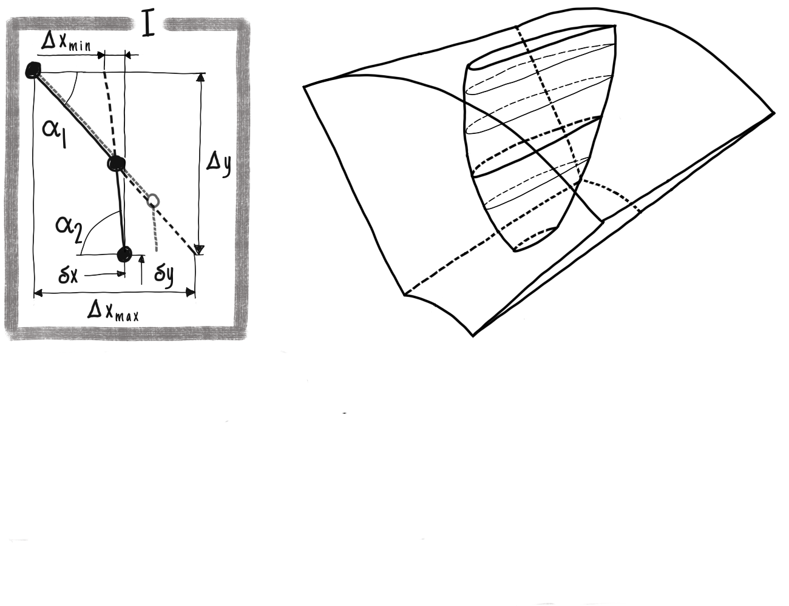
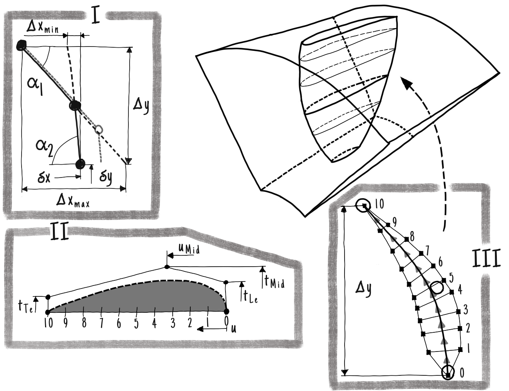
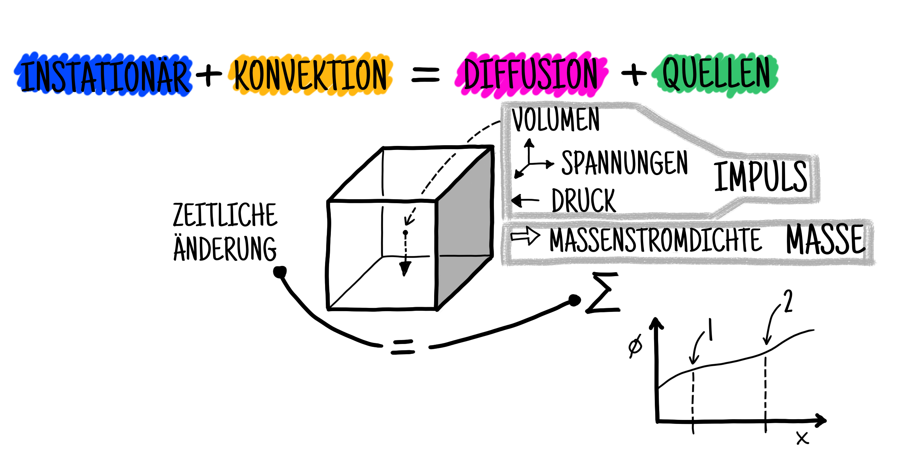
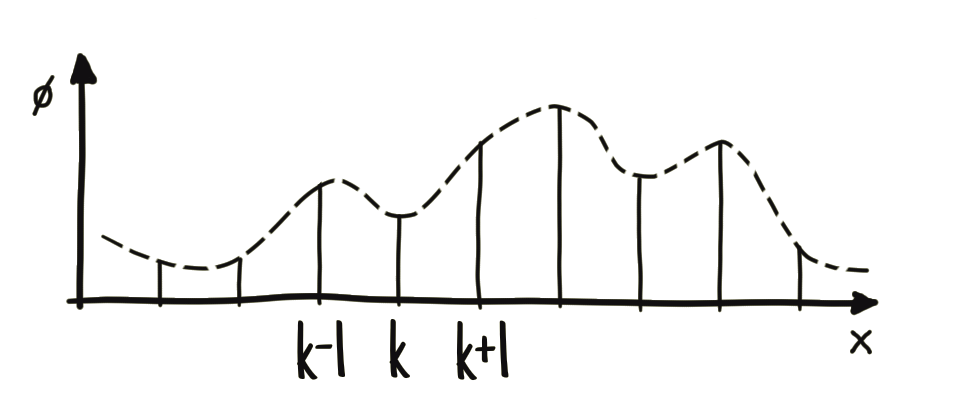
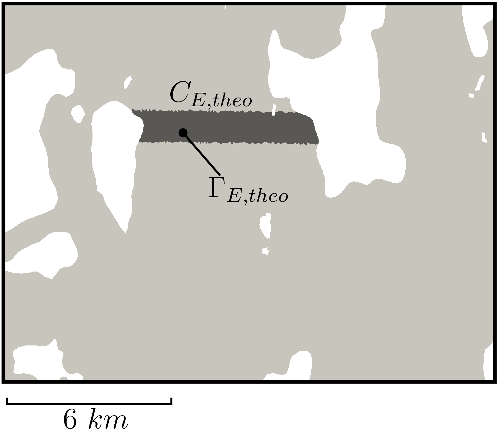

Numerische Strömungsmechanik
mit Optimierungsanwendung
Organisation
- Vorlesung
- Übung
- Sprechstunde
- Termine nach Vereinbarung
- Prüfung mündlich 40 Minuten
- Termine nach Vereinbarung

Hydraulische Maschine
Simulation und Eigenschaften


- Inkompressible Wasserströmung mit kinematischer Viskosität \(\nu = 10^{-6}\)
- Rohrturbine mit z.B. \(D = 4m\) Durchmesser und einer Zuströmgeschwindigkeit von \(v=1\frac{m}{s}\) und damit hohen \(Re\)-Zahlen bzw. turbulenter Strömung
- Steigender Druckgradient
- Vernetzung des Strömungsgebiets
- Stehende und rotierende Gebiete müssen berechnet und gekoppelt werden
Hydraulische Maschine
Geometrische Beschreibung





- Auslegung der Maschine auf Blattschnitten
- Definition von Freiheitsgraden zur Veränderung der Geometrie
- Erzeugung der dreidimensionalen Geometrie durch Verbinden von Kurven
- Verwendung von nicht-uniformen, rationalen B-Splines (NURBS)
Grundgleichungen
Beschreibung von Strömungen durch Navier-Stokes-Gleichungen:
\[ \begin{aligned} \frac{\partial{}}{\partial{t}} \underline{u} + \underline{u} \cdot \left( \nabla \cdot \underline{u} \right) & = \nu \nabla \cdot \left( \nabla \cdot \underline{u} \right) - \frac{1}{\rho} \nabla p \\ \nabla \cdot \underline{u} & = 0 \end{aligned} \]
\[ \begin{aligned} \color{blue}{\frac{\partial{}}{\partial{t}} \underline{u}} + \color{orange}{\underline{u} \cdot \left( \nabla \cdot \underline{u} \right)} & = \color{magenta}{\nu \nabla \cdot \left( \nabla \cdot \underline{u} \right)} - \color{green}{\frac{1}{\rho} \nabla p} \\ \nabla \cdot \underline{u} & = 0 \end{aligned} \]
- Unbekannte \(\phi\) bzw. \(\underline{u}\) und \(\underline{p}\) sind kontinuierliche Felder (Kontinuumsmechanik)
- Numerik löst partielle Differentialgleichungen an diskreten Stellen (Gitter)



Finite-Volumen-Methode
Ortsdiskretisierung
Eindimensionales Konvektions-Diffusions-Problem \(u \frac{\partial \phi}{\partial x} = \Gamma \frac{\partial }{\partial x} \frac{\partial \phi}{\partial x} \) mit \(u,\Gamma=\mathrm{const}\)
\[ {\small\begin{aligned} u \frac{\partial \phi}{\partial x} & \color{lightgray}{ \rightarrow \int_\mathcal{V} u \frac{\partial \phi}{\partial x} \, d\mathcal{V} \rightarrow \int_\mathcal{S} u \phi \, d\mathcal{S} \rightarrow - \left[ u \phi \right]_{k} + \left[ u \phi \right]_{k+1} } \\ & \color{lightgray}{ \rightarrow - u \frac{\phi_{m-1} + \phi_{m}}{2} + u \frac{\phi_m + \phi_{m+1}}{2} \rightarrow u \frac{{\phi}_{m+1}-{\phi}_{m-1}}{2} } \\ \Gamma \frac{\partial }{\partial x} \frac{\partial \phi}{\partial x} & \color{lightgray}{ \rightarrow \int_\mathcal{V} \Gamma \frac{\partial }{\partial x} \frac{\partial \phi}{\partial x} \, d\mathcal{V} \rightarrow \int_\mathcal{S} \Gamma \frac{\partial \phi}{\partial x} \, d\mathcal{S} \rightarrow - \left[ \Gamma \frac{\partial \phi}{\partial x} \right]_{k} + \left[ \Gamma \frac{\partial \phi}{\partial x} \right]_{k+1} } \\ & \color{lightgray}{ \rightarrow - \Gamma \frac{{\phi}_{m}-{\phi}_{m-1}}{\delta x} + \Gamma \frac{{\phi}_{m+1}-{\phi}_{m}}{\delta x} \rightarrow \Gamma \frac{{\phi}_{m+1}-{2\phi}_{m}+{\phi}_{m-1}}{\delta x} } \end{aligned}} \]
\[ {\small\begin{aligned} u \frac{\partial \phi}{\partial x} & \rightarrow \int_\mathcal{V} u \frac{\partial \phi}{\partial x} \, d\mathcal{V} \rightarrow \int_\mathcal{S} u \phi \, d\mathcal{S} \color{lightgray}{ \rightarrow - \left[ u \phi \right]_{k} + \left[ u \phi \right]_{k+1} } \\ & \color{lightgray}{ \rightarrow - u \frac{\phi_{m-1} + \phi_{m}}{2} + u \frac{\phi_m + \phi_{m+1}}{2} \rightarrow u \frac{{\phi}_{m+1}-{\phi}_{m-1}}{2} } \\ \Gamma \frac{\partial }{\partial x} \frac{\partial \phi}{\partial x} & \rightarrow \int_\mathcal{V} \Gamma \frac{\partial }{\partial x} \frac{\partial \phi}{\partial x} \, d\mathcal{V} \rightarrow \int_\mathcal{S} \Gamma \frac{\partial \phi}{\partial x} \, d\mathcal{S} \color{lightgray}{ \rightarrow - \left[ \Gamma \frac{\partial \phi}{\partial x} \right]_{k} + \left[ \Gamma \frac{\partial \phi}{\partial x} \right]_{k+1} } \\ & \color{lightgray}{ \rightarrow - \Gamma \frac{{\phi}_{m}-{\phi}_{m-1}}{\delta x} + \Gamma \frac{{\phi}_{m+1}-{\phi}_{m}}{\delta x} \rightarrow \Gamma \frac{{\phi}_{m+1}-{2\phi}_{m}+{\phi}_{m-1}}{\delta x} } \end{aligned}} \]
\[ {\small\begin{aligned} u \frac{\partial \phi}{\partial x} & \rightarrow \int_\mathcal{V} u \frac{\partial \phi}{\partial x} \, d\mathcal{V} \rightarrow \int_\mathcal{S} u \phi \, d\mathcal{S} \rightarrow - \left[ u \phi \right]_{k} + \left[ u \phi \right]_{k+1} \\ & \color{lightgray}{ \rightarrow - u \frac{\phi_{m-1} + \phi_{m}}{2} + u \frac{\phi_m + \phi_{m+1}}{2} \rightarrow u \frac{{\phi}_{m+1}-{\phi}_{m-1}}{2} } \\ \Gamma \frac{\partial }{\partial x} \frac{\partial \phi}{\partial x} & \rightarrow \int_\mathcal{V} \Gamma \frac{\partial }{\partial x} \frac{\partial \phi}{\partial x} \, d\mathcal{V} \rightarrow \int_\mathcal{S} \Gamma \frac{\partial \phi}{\partial x} \, d\mathcal{S} \rightarrow - \left[ \Gamma \frac{\partial \phi}{\partial x} \right]_{k} + \left[ \Gamma \frac{\partial \phi}{\partial x} \right]_{k+1} \\ & \color{lightgray}{ \rightarrow - \Gamma \frac{{\phi}_{m}-{\phi}_{m-1}}{\delta x} + \Gamma \frac{{\phi}_{m+1}-{\phi}_{m}}{\delta x} \rightarrow \Gamma \frac{{\phi}_{m+1}-{2\phi}_{m}+{\phi}_{m-1}}{\delta x} } \end{aligned}} \]
\[ {\small\begin{aligned} u \frac{\partial \phi}{\partial x} & \rightarrow \int_\mathcal{V} u \frac{\partial \phi}{\partial x} \, d\mathcal{V} \rightarrow \int_\mathcal{S} u \phi \, d\mathcal{S} \rightarrow - \left[ u \phi \right]_{k} + \left[ u \phi \right]_{k+1} \\ & \rightarrow - u \frac{\phi_{m-1} + \phi_{m}}{2} + u \frac{\phi_m + \phi_{m+1}}{2} \rightarrow u \frac{{\phi}_{m+1}-{\phi}_{m-1}}{2} \\ \Gamma \frac{\partial }{\partial x} \frac{\partial \phi}{\partial x} & \rightarrow \int_\mathcal{V} \Gamma \frac{\partial }{\partial x} \frac{\partial \phi}{\partial x} \, d\mathcal{V} \rightarrow \int_\mathcal{S} \Gamma \frac{\partial \phi}{\partial x} \, d\mathcal{S} \rightarrow - \left[ \Gamma \frac{\partial \phi}{\partial x} \right]_{k} + \left[ \Gamma \frac{\partial \phi}{\partial x} \right]_{k+1} \\ & \rightarrow - \Gamma \frac{{\phi}_{m}-{\phi}_{m-1}}{\delta x} + \Gamma \frac{{\phi}_{m+1}-{\phi}_{m}}{\delta x} \rightarrow \Gamma \frac{{\phi}_{m+1}-{2\phi}_{m}+{\phi}_{m-1}}{\delta x} \end{aligned}} \]
Differential
Differential \(\rightarrow\) Integral mit Divergenztheorem
Differential \(\rightarrow\) Integral mit Divergenztheorem
Differential \(\rightarrow\) Integral mit Divergenztheorem \(\rightarrow\) lineare Approximation



\[ {\small \left( -\frac{u}{2}-\frac{\Gamma}{\delta x} \right) \phi_{m-1} +\left( \frac{2\Gamma}{\delta x} \right) \phi_{m} +\left( \frac{u}{2}-\frac{\Gamma}{\delta x} \right) \phi_{m+1} = 0 } \]
Anwendung
Wasserkraftwerk in Nepal [4]
Leistungsschwankungen der Turbine verursacht durch die Trifurkation

Anwendung
Wasserkraftwerk in Nepal [4]
Instationärer Wirbel innerhalt der Trifurkation

Anwendung
Wasserkraftwerk in Nepal [4]
Lösung: Einbau von Blechen

Anwendung
Wasserkraftwerk in Nepal [5]
Anderes Kraftwerk, aber gleiches Problem?

Anwendung
Gezeitenströmung [6]


- Geometriedaten aus geometrischem Informationssystem (GIS)
- Kopplung von TPXO für Randbedingungen

Anwendung
Gezeitenströmung [6]
Theoretisches Potential

- Kanalverblockung
Technisches Potential

- Verblockung nutzbare Fläche
Realistisches Potential

- Platzierung einzelner Turbinen
- Berücksichtigung der Hauptströmungsrichtungen
- Fernfeldeinfluss mit Nachlaufschatten
Anwendung
Gezeitenströmung [6]


- Zeitlicher Verlauf der Strömungsrichtung und zwei Strömungsfelder in unterschiedlichen Zeitschritten
Anwendung
Gezeitenströmung [6]
Beispiel des Verlaufs der Anströmbedingungen
- Starke Variation der lokalen Anströmrichtungen
- Turbinenverbund verblockt maßgeblich Kernströmung im Kanal